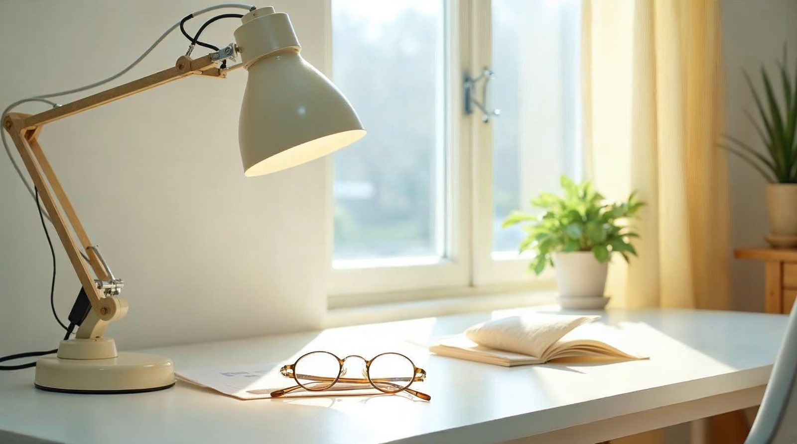
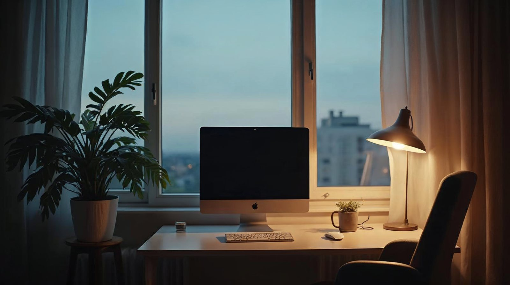
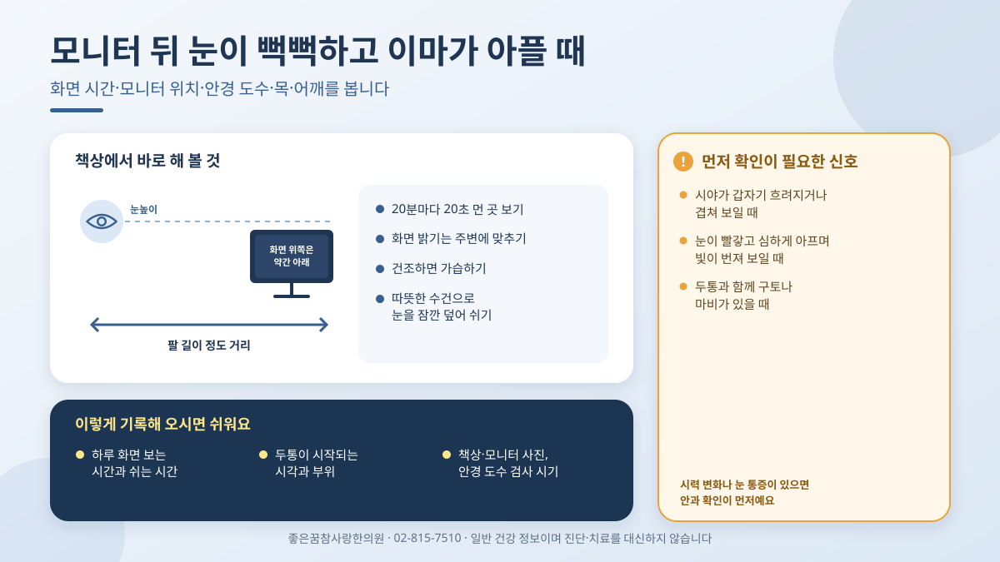

이종호 한의사 감수좋은꿈참사랑한의원 대표원장 (한의사 면허번호 19769)발행 2026-11-23 · 수정 2026-11-26
이 글의 차례
- 왜 이런 불편이 생길 수 있나요
- 왜 화면을 보면 이마와 관자놀이까지 아플까요?
- 화면 때문에 생긴 두통은 다른 두통과 어떻게 다른가요?
- 이런 환경에서 일하고 계시지 않나요?
- 스스로 점검해 보세요
- 먼저 이렇게 여쭙니다
- 일상에서 먼저 해 볼 수 있는 것
- 책상과 모니터는 어떻게 맞추면 좋을까요?
- 눈을 쉬게 하는 방법은 무엇인가요?
- 목과 어깨는 어떻게 풀어 줄까요?
- 인강을 오래 듣는 수험생은 무엇을 챙길까요?
- 실내 공기와 밝기는 어떻게 맞출까요?
- 일하는 중간에 짧게 쉬는 습관은 어떻게 만들까요?
- 눈 주변을 스스로 눌러 풀어도 되나요?
- 잠들기 전 휴대폰은 어떻게 할까요?
- 안경이나 렌즈를 쓰는 분은 무엇을 확인할까요?
- 얼마나 지켜보고 언제 상담할까요?
- 한의원에서 함께 살필 수 있는 경우
- 이렇게 기록해 오시면 상담이 쉬워집니다
- 이런 증상은 먼저 확인이 필요합니다
모니터를 오래 보고 나면 눈이 뻑뻑하고 이마와 관자놀이가 아프다면, 하루 화면 보는 시간과 모니터 위치, 안경이나 렌즈 도수, 목·어깨 긴장을 먼저 살핍니다. 시야가 흐려지거나 눈이 빨갛거나 아프다면 안과 확인이 먼저이고, 갑자기 생겼거나 심하다면 안과나 가까운 응급실로 바로 가세요.
하루 종일 모니터를 보는 직장인, 인강을 오래 듣는 노량진 수험생에게서 퇴근 무렵 이마가 조이듯 아프다는 이야기를 자주 듣습니다.
왜 이런 불편이 생길 수 있나요
- 가까운 화면을 오래 보면 초점을 맞추는 눈 근육이 쉬지 못하고 계속 긴장합니다.
- 화면에 집중하면 눈을 덜 깜빡여 눈이 마르고 뻑뻑해지기 쉽습니다.
- 모니터가 너무 낮거나 멀면 고개가 앞으로 나와 목과 어깨가 굳고, 이 긴장이 이마와 관자놀이 두통으로 이어질 수 있습니다.
- 안경 도수가 맞지 않거나 실내가 건조하면 눈의 피로가 더 커집니다.
왜 화면을 보면 이마와 관자놀이까지 아플까요?
가까운 화면에 초점을 맞추는 동안 눈 안쪽 근육은 계속 힘을 줍니다. 이 상태가 몇 시간씩 이어지면 눈이 피로해지는 것은 물론, 눈썹 사이를 찌푸리고 이마에 힘을 주는 습관이 함께 생깁니다. 이마가 조이는 듯한 두통은 이렇게 얼굴 근육이 오래 긴장한 결과인 경우가 많습니다.
관자놀이에는 음식을 씹을 때 쓰는 근육이 지나갑니다. 화면에 집중할 때 어금니를 꽉 무는 분이 많은데, 이 습관이 관자놀이를 뻐근하게 만듭니다. 그래서 눈의 피로와 턱의 긴장, 목·어깨의 굳음이 한데 엮여 머리 앞쪽과 옆쪽 두통으로 나타납니다.
화면을 보며 고개를 앞으로 내밀면 머리 무게를 목 뒤 근육이 버텨야 합니다. 목 뒤가 굳으면 뒤통수에서 이마 쪽으로 당기는 느낌이 생기기도 합니다. 결국 눈만의 문제가 아니라 자세 전체를 함께 봐야 하는 이유입니다.
화면 때문에 생긴 두통은 다른 두통과 어떻게 다른가요?
화면 사용과 관련된 두통은 대개 아침에는 괜찮다가 오후로 갈수록 심해지고, 화면을 오래 보지 않은 주말이나 휴가에는 가벼워지는 흐름을 보입니다. 이 흐름이 뚜렷하다면 일하는 환경을 먼저 손보는 것이 좋습니다.
머리 한쪽이 욱신거리고 속이 메스껍거나 빛과 소리가 거슬리는 두통이 몇 시간씩 이어진다면 편두통의 모습일 수 있습니다. 일어나자마자 머리가 무겁다면 잠과 관련된 원인을, 이마와 볼이 묵직하고 코가 막혀 있다면 코 쪽 원인을 함께 생각해 봅니다.
이렇게 두통이 언제, 어디에, 어떻게 오는지를 나누어 보면 화면이 얼마나 영향을 주는지가 보입니다. 그래서 진료 때는 하루 중 두통이 시작되는 시각을 꼭 여쭙습니다.
이런 환경에서 일하고 계시지 않나요?
- 예를 들어 노트북 화면 하나만 보며 하루 8시간 넘게 일하는 경우
- 예를 들어 듀얼 모니터 가운데 옆 화면을 주로 봐서 고개가 한쪽으로 돌아가 있는 경우
- 예를 들어 불을 끈 방이나 어두운 자습실에서 밝은 화면을 오래 보는 경우
- 예를 들어 에어컨이나 히터 바람이 얼굴 쪽으로 바로 오는 자리에 앉는 경우
- 예를 들어 퇴근 뒤에도 잠들기 전까지 휴대폰으로 영상을 보는 경우
이런 환경은 하루 이틀로는 큰 불편이 없다가, 몇 주 몇 달이 쌓이며 오후 두통으로 나타나는 경우가 많습니다. 자리를 옮기거나 새 업무를 맡은 뒤 두통이 시작되었다면 그 시기도 함께 떠올려 보세요. 책상 환경이 바뀐 날짜는 원인을 찾는 좋은 단서가 됩니다.
스스로 점검해 보세요
- 모니터 윗부분이 눈높이보다 높다
- 화면과 눈 사이가 팔 길이보다 가깝다
- 한 시간 넘게 화면에서 눈을 떼지 않는 일이 잦다
- 오후가 되면 눈이 뻑뻑하고 깜빡이기가 불편하다
- 집중할 때 미간을 찌푸리거나 이를 꽉 문다
- 안경이나 렌즈 도수를 확인한 지 2년이 넘었다
- 주말에는 두통이 거의 없다
해당하는 항목이 많을수록 일하는 환경과 습관이 두통에 큰 몫을 하고 있을 가능성이 큽니다. 점검 결과를 적어 오시면 무엇부터 바꿀지 함께 정하기 쉽습니다.

먼저 이렇게 여쭙니다
- 하루에 화면을 몇 시간 정도 보시나요?
- 안경이나 렌즈 도수를 최근에 확인하셨나요?
- 모니터 높이와 거리는 어떤가요?
- 눈이 아플 때 목·어깨도 함께 뻐근한가요?
- 두통이 오후로 갈수록 심해지나요?
- 렌즈를 끼고 하루 몇 시간 지내시나요?
첫 방문에서는 맥을 짚은 뒤 목과 어깨, 머리 옆과 뒤쪽 근육을 직접 눌러 보며 어디가 굳어 있는지 확인합니다. 고개를 숙이고 돌릴 때 어디가 당기는지, 앉은 자세에서 머리가 얼마나 앞으로 나와 있는지도 함께 봅니다.
잠은 어떤지, 커피는 하루 몇 잔 드시는지, 오후에 졸음이 쏟아지는지도 여쭙습니다. 눈의 피로가 잠 부족이나 끼니 거르기와 겹쳐 더 심해지는 경우가 많기 때문입니다.
일상에서 먼저 해 볼 수 있는 것
- 20분마다 20초 정도 먼 곳 보기
- 모니터는 눈높이보다 약간 아래, 팔 길이 정도 거리에 두기
- 실내가 건조하면 가습하기
- 눈을 따뜻한 수건으로 잠깐 덮어 쉬기
- 화면 밝기를 주변 밝기에 맞추기
책상과 모니터는 어떻게 맞추면 좋을까요?
노트북을 쓰신다면 거치대로 화면을 올리고 키보드와 마우스는 따로 쓰시길 권합니다. 노트북을 책상에 그대로 두면 화면이 낮아 고개가 숙여지고, 하루가 끝날 무렵이면 목과 이마가 함께 뻐근해집니다.
듀얼 모니터라면 가장 많이 보는 화면을 몸 정면에 두세요. 두 화면을 비슷하게 본다면 두 화면이 만나는 부분이 코 앞에 오도록 놓습니다. 창문을 등지거나 화면에 조명이 비치는 자리라면 반사 때문에 눈에 힘이 더 들어가니 화면 각도를 조금 바꿔 보세요.
글자가 작아 화면 쪽으로 몸이 다가가게 된다면 글자 크기를 한두 단계 키우세요. 의자는 발바닥이 바닥에 닿고 등받이에 허리를 기댈 수 있는 높이가 좋습니다.
눈이 피로할 때 손으로 비비는 습관이 있다면 줄여 보세요. 손에 묻은 먼지가 눈을 자극하고, 비빌수록 눈이 더 뻑뻑하게 느껴지기 쉽습니다. 손을 씻은 뒤 따뜻한 수건을 쓰거나, 잠시 눈을 감고 쉬는 쪽이 눈에 부담이 덜합니다. 오후에 눈이 유난히 피로한 날은 그날의 일정과 화면 시간도 함께 적어 두세요.
눈을 쉬게 하는 방법은 무엇인가요?
화면에 집중하면 눈 깜빡임이 평소의 절반 가까이 줄어든다고 알려져 있습니다. 한 시간에 한 번은 눈을 꼭 감았다 뜨기를 열 번쯤 천천히 해 보세요. 눈 표면이 다시 촉촉해지는 느낌이 듭니다.
점심시간에는 휴대폰 대신 창밖이나 바깥의 먼 곳을 보며 걸어 보세요. 가까운 곳만 보던 눈 근육이 쉬는 시간입니다. 퇴근 뒤 따뜻한 수건을 눈 위에 5분쯤 올려 두면 뻑뻑함이 덜해지는 분이 많습니다. 수건은 손등에 대 봐서 뜨겁지 않은 온도로 쓰세요.
퇴근 뒤 샤워할 때 따뜻한 물을 목 뒤와 어깨에 2~3분 대 주면 하루 동안 굳은 근육이 풀리는 데 도움이 됩니다. 주말에는 30분쯤 걷거나 가벼운 운동으로 상체를 움직여, 한 주 내내 같은 자세로 굳은 몸을 풀어 주세요. 수영이나 가벼운 등산처럼 고개를 들고 멀리 보게 되는 운동이면 눈도 함께 쉴 수 있어 화면 작업이 많은 분께 특히 권합니다.
목과 어깨는 어떻게 풀어 줄까요?
의자에 앉은 채 턱을 살짝 당겨 뒤통수를 위로 늘리듯 5초 버티기를 다섯 번 해 보세요. 앞으로 나온 머리를 제자리로 돌려놓는 동작입니다.
어깨를 귀 쪽으로 끌어올렸다가 힘을 툭 빼며 떨어뜨리기, 양손을 등 뒤에서 깍지 끼고 가슴을 펴기도 도움이 됩니다. 한 번에 길게 하기보다 한두 시간마다 짧게 자주 하는 것이 좋습니다.
인강을 오래 듣는 수험생은 무엇을 챙길까요?
인강은 화면을 보며 손으로 필기까지 하다 보니, 고개를 화면과 책상 사이로 계속 오르내리게 됩니다. 화면은 높게, 교재는 낮게 있으면 목이 하루에도 수백 번 숙였다 들었다를 반복합니다. 독서대를 써서 교재를 화면 높이 가까이 올려 두면 목의 부담이 덜합니다.
강의 하나가 끝날 때마다 자리에서 일어나 창가에서 먼 곳을 1~2분 보고 오세요. 배속을 빠르게 해서 연달아 듣는 날은 눈이 쉬는 틈이 거의 없어 두통이 더 일찍 찾아옵니다.
밤늦게 휴대폰으로 강의를 다시 보는 습관은 눈의 피로와 잠을 함께 흔듭니다. 복습은 가능하면 낮 시간에, 큰 화면으로 하시길 권합니다.
실내 공기와 밝기는 어떻게 맞출까요?
방 전체는 어두운데 화면만 밝으면 눈이 밝기 차이에 계속 적응하느라 쉽게 지칩니다. 화면 밝기는 주변보다 조금 밝은 정도로 맞추고, 책상 위에는 스탠드를 함께 켜 두세요.
겨울철 난방이나 여름철 에어컨으로 실내가 건조하면 눈이 금세 뻑뻑해집니다. 가습기를 쓰거나 젖은 수건을 널어 두고, 바람이 얼굴로 바로 오지 않게 송풍 방향을 바꿔 보세요. 물을 자주 마시는 것도 도움이 됩니다.
일하는 중간에 짧게 쉬는 습관은 어떻게 만들까요?
일에 몰두하다 보면 쉬는 시간을 잊기 쉽습니다. 휴대폰이나 컴퓨터에 50분마다 울리는 알림을 맞춰 두고, 알림이 울리면 자리에서 일어나 물을 뜨러 가거나 창가까지 걸어 보세요. 1~2분이면 충분합니다.
회의가 줄줄이 있는 날은 회의실로 옮겨 가는 길을 쉬는 시간으로 삼으세요. 화상 회의가 많다면 화면 속 얼굴만 계속 보지 말고, 말을 듣는 동안은 잠깐씩 시선을 화면 밖 먼 곳으로 옮기는 것도 눈을 쉬게 하는 방법입니다.
점심을 책상에서 화면을 보며 먹는 습관이 있다면 일주일에 몇 번만이라도 자리를 떠나 드세요. 눈과 목이 한낮에 한 번 쉬면 오후 두통이 찾아오는 시각이 늦어지는 경우가 많습니다.
눈 주변을 스스로 눌러 풀어도 되나요?
눈알을 직접 누르는 것은 피하시고, 눈썹 위 뼈와 관자놀이, 뒤통수 아래 오목한 부분을 손끝으로 둥글게 문질러 주는 정도가 좋습니다. 아프게 세게 누르기보다 시원하다고 느낄 만큼만 하세요.
이렇게 스스로 풀어도 금세 다시 굳는다면 자세와 환경이 계속 긴장을 만들고 있다는 뜻입니다. 그럴 때는 진료 때 굳은 곳을 함께 확인하고 환경을 다시 점검해 봅니다.
잠들기 전 휴대폰은 어떻게 할까요?
하루 종일 모니터를 본 눈으로 잠들기 직전까지 휴대폰을 보면 눈이 쉴 틈이 없습니다. 밝은 화면은 몸이 밤을 알아차리는 것도 늦춰 잠드는 시각을 뒤로 미루기 쉽습니다.
잠자리에 들기 한 시간 전에는 휴대폰을 충전기에 꽂아 손이 닿지 않는 곳에 두세요. 그 시간에는 따뜻한 물로 씻거나 가볍게 몸을 늘리며 눈과 머리를 쉬게 해 주세요. 잠을 충분히 잔 다음 날은 오후 두통이 덜하다는 분이 많습니다.
안경이나 렌즈를 쓰는 분은 무엇을 확인할까요?
도수가 맞지 않는 안경은 눈이 초점을 맞추느라 더 애쓰게 해 두통을 부르기 쉽습니다. 마지막으로 도수를 확인한 지 오래되었다면 안과나 안경원에서 확인해 보세요. 마흔 무렵부터 가까운 글씨가 흐릿해진다면 노안이 시작된 것일 수 있어 함께 확인하는 것이 좋습니다.
렌즈를 오래 끼면 눈이 더 쉽게 마릅니다. 화면 작업이 긴 날은 오후에 안경으로 바꿔 쓰거나, 렌즈 착용 시간을 정해 두시길 권합니다. 인공눈물을 쓰신다면 어떤 것을 하루 몇 번 쓰는지도 알려 주세요.
얼마나 지켜보고 언제 상담할까요?
모니터 위치와 쉬는 습관을 바꾸고 2주쯤 지켜보세요. 두통이 시작되는 시각이 늦어지거나 강도가 줄어든다면 방향이 맞는 것입니다.
환경을 바꿨는데도 일주일에 사흘 넘게 오후 두통이 이어지거나, 두통약을 자주 찾게 된다면 진료를 받아 보세요. 눈 자체의 불편이 크다면 안과 확인을 함께 받으시길 권합니다.

한의원에서 함께 살필 수 있는 경우
- 화면을 본 뒤 두통이 반복되는 경우 눈 주변과 목·어깨 긴장을 함께 살핍니다.
- 오래 앉아 공부하거나 일해 자세가 무너진 경우 자세와 근육 긴장을 함께 살핍니다.
- 눈의 피로와 함께 잠이 얕은 경우 생활 리듬을 함께 살핍니다.
좋은꿈참사랑한의원에서는 먼저 화면을 보는 환경과 두통이 오는 시간을 충분히 듣고, 진맥을 기본으로 목·어깨와 머리 주변의 긴장을 살핍니다. 그다음 침, 약침, 추나 가운데 상태에 맞는 방법을 정하고, 시력 변화나 눈의 통증이 있으면 안과를 먼저 안내합니다. 귀가 전에는 책상에서 바로 해 볼 모니터 위치 조정과 쉬는 방법을 알려 드립니다.
이렇게 기록해 오시면 상담이 쉬워집니다
- 하루 화면 보는 시간과 쉬는 시간
- 두통이 시작되는 시각과 부위
- 책상과 모니터 사진 한 장
- 최근 안경 도수 검사 시기와 쓰는 안약
기록은 퇴근 무렵 한 번이면 충분합니다. '두통 시작 오후 3시·이마, 화면 9시간, 쉬는 시간 2번'처럼 짧게 적어 두면, 쉬는 시간을 늘린 날과 그렇지 않은 날의 차이가 눈에 보입니다.
이런 증상은 먼저 확인이 필요합니다
- 시야가 갑자기 흐려지거나 겹쳐 보이는 경우
- 눈이 심하게 아프거나 빨갛게 충혈된 경우
이런 신호가 있으면 한의원보다 가까운 병원이나 응급실을 먼저 찾으세요.

여쭙는 것
- 하루에 화면을 몇 시간 정도 보시나요?
- 안경이나 렌즈 도수를 최근에 확인하셨나요?
- 모니터 높이와 거리는 어떤가요?
생활에서 해 볼 것
- 20분마다 20초 정도 먼 곳 보기
- 모니터는 눈높이보다 약간 아래, 팔 길이 정도 거리에 두기
- 실내가 건조하면 가습하기
한의원에서 함께 살필 것
- 화면을 본 뒤 두통이 반복되는 경우 눈 주변과 목·어깨 긴장을 함께 살핍니다.
- 오래 앉아 공부하거나 일해 자세가 무너진 경우 자세와 근육 긴장을 함께 살핍니다.
- 눈의 피로와 함께 잠이 얕은 경우 생활 리듬을 함께 살핍니다.
먼저 확인이 필요한 신호
- 시야가 갑자기 흐려지거나 겹쳐 보이는 경우
- 눈이 심하게 아프거나 빨갛게 충혈된 경우
한눈에 보는 표
| 구분 | 핵심 |
|---|---|
| 여쭙는 것 | 하루에 화면을 몇 시간 정도 보시나요? 안경이나 렌즈 도수를 최근에 확인하셨나요? |
| 생활에서 해 볼 것 | 20분마다 20초 정도 먼 곳 보기 모니터는 눈높이보다 약간 아래, 팔 길이 정도 거리에 두기 |
| 한의원에서 함께 살필 것 | 화면을 본 뒤 두통이 반복되는 경우 눈 주변과 목·어깨 긴장을 함께 살핍니다. 오래 앉아 공부하거나 일해 자세가 무너진 경우 자세와 근육 긴장을 함께 살핍니다. |
| 먼저 확인이 필요한 신호 | 시야가 갑자기 흐려지거나 겹쳐 보이는 경우 눈이 심하게 아프거나 빨갛게 충혈된 경우 |
자주 묻는 질문
안과 검사를 먼저 받아야 하나요?
시력 변화나 눈의 통증이 있다면 안과 검사를 먼저 또는 함께 권합니다.
인공눈물을 써도 되나요?
안과나 약사와 상의해 쓰시고, 사용 중이라면 알려 주세요.
블루라이트 안경을 쓰면 되나요?
쓰는 분도 있지만 쉬는 시간과 화면 위치를 바꾸는 것이 먼저입니다. 함께 하나씩 조정해 봅니다.
진료 시간은 어떻게 되나요?
좋은꿈참사랑한의원은 평일 09:30~20:00(점심 13:00~14:00), 토·일·공휴일 09:30~15:00에 진료합니다.
좋은꿈참사랑한의원은 재진 때 지난번 이야기부터 이어서 여쭙니다. 진료시간과 예약은 오시는 길에서 확인하세요.
어디서 상담받을 수 있나요?
좋은꿈참사랑한의원은 서울 동작구 만양로2길 2 신성빌딩 3층·5층(서울 동작구 상도동, 7호선 상도역 3번 출구 근처)에 있습니다. 한의사 3명(이종호 대표원장, 조영기 수석진료원장, 정원영 진료원장)이 진료합니다. 진료시간은 평일 09:30~20:00(점심 13:00~14:00), 토·일·공휴일 09:30~15:00이며, 방문 전 전화로 확인을 권합니다. 예약은 네이버 예약, 카카오톡 상담, 전화 02-815-7510로 받습니다.
이 글은 일반적인 건강 정보이며 개인의 진단이나 치료를 대신하지 않습니다. 증상이 있거나 복용 중인 약이 있다면 진료를 통해 확인하세요. 치료 효과는 개인마다 다를 수 있습니다.
작성 기준: 일반적으로 알려져 있는 건강 정보를 참고해 정리했습니다(대표원장 감수). 증상 기록은 1~2주 동안 하루 1회, 비슷한 시간에 적어 오시면 지난 상태와 비교하기 쉽습니다.